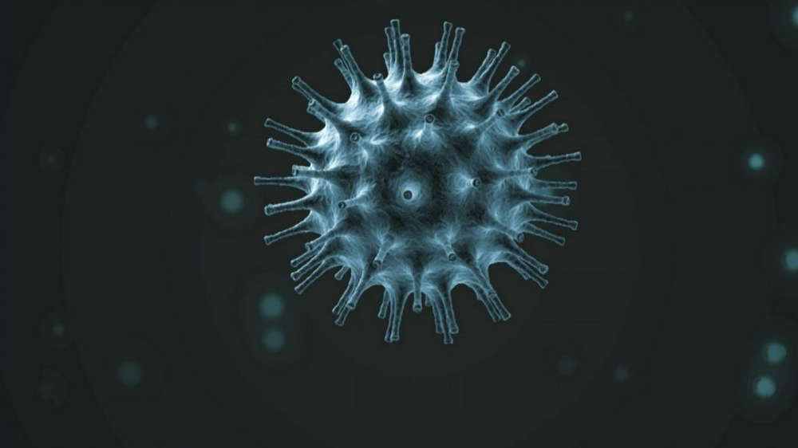
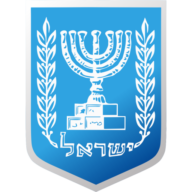

¿El coronavirus es el resultado de un ciberataque?
'Una enfermedad como el coronavirus puede ser creada a través de un ciberataque', afirmó el miércoles el fundador y presidente ejecutivo de Jerusalem Venture Partners (JVP), Dr. Erel Margalit, en la Muni Expo 2020.
'Aquellos que saben cómo hackear a los organismos financieros también pueden hackear las empresas farmacéuticas y crear un virus', dijo Margalit.'Los hackers pueden hackear laboratorios y alterar la composición de los medicamentos e incluso hacer cosas peores.No tenemos pruebas de que el virus actual sea el resultado de un ciberataque, aunque podría serlo'.
Margalit añadió que los hackers vigilan la propagación mundial y el pánico que causa el coronavirus y cómo impacta en la economía internacional.'Esta es una promoción de lo que podría causar un ciberataque de calidad.Cuando un arma biológica está en manos de los hackers, la amenaza es más grande que nunca'.
Durante el evento, Margalit presentó la Ciudad Startup de Margalit, destinada a elevar las empresas de tecnología en fase de crecimiento al siguiente nivel en todo el mundo y proporcionar espacio de aceleración para las empresas en fase de crecimiento.
Los participantes mostraron gran interés en el modelo de Margalit, así como en el razonamiento y las opciones de ubicación de los próximos centros en todo el mundo.
'Israel exportaría con gusto su conocimiento y construiría los próximos centros de innovación en todo el mundo', concluyó Margalit.'Cualquier ciudad que se vea a sí misma como central debe tener un centro cibernético internacional.La mayor amenaza global hoy en día es a través de los ciberataques que amenazan la salud, las finanzas, los medios de comunicación, la infraestructura, los sistemas democráticos y la libertad personal'.


Content Date: n/a
Download Date: 2021-05-13
Document ID: L0C04C7HV